PCI-DSS Norma, sukladnost sa PCI-DSS normom
Temu obradili: Mario Barešić, Jasna Kafka i Željko Ružak
Sadržaj |
Uvod
Kartično poslovanje je postalo sve češće i zastupljenije bilo prilikom Interent kupovine ili u trgovinama. Kartice su praktičnije za prenositi i mogu se koristiti u različitim djelovima svijeta. Da bi plačanje putem kartica bilo sigurno potrebno je imati određenu infrastrukturu i podatke. Budući da se radi o tajnim podacima i novcu, koji je često glavni plijen kod mnogih kriminalnih djela, potrebno je na neki način zaštititi se. S obzirom na to da se kartice mogu koristiti u gotovo svih trgovinama i različitim zemljama potrebno je imati neki standard, koji bi vrijedio svugdje, kako bi korisnici kartica sigurno mogli plačati bez obzira na to gdje se nalaze. Zato je razvijena PCI - DSS norma. To je standard za kartično poslovanje a puni naziv PCI DSS kratice je Payment Card Industry Data Security Standard. To je norma s 12 zahtjeva, koje moraju ispuniti trgovci, financijske institucije i svi drugi pružatelji usluge plačanja putem kartica. Standard je u početku razvila Visa Account Information Security s MasterCardovim programom za zaštitu podataka. Njegova je osnovna svrha zaštita podataka vlasnika kartica i sigurnost prilikom provođenja transakcija.
Za razvijanje i unapređivanje PCI - DSS norme se brine PCI Security Standards Council. To je vijeće, koje je unaprijedilo standard i upravlja njime. Osim toga nudi sve potrebne dokumente za upoznavanje i uvođenje zahtjeva iz norme, te obrazovanje i upravlja s još dvije druge norme osim PCI - DSS.
Najvažniji PCI standardi (norme za sigurno kartično poslovanje) su (prema Thakar i Ramos, 2011, str. 12):
- PCI - DSS: detaljno opisan na ovim wiki stranicama
- PA - DSS: Payment Application Data Security Standard, namijenjen developerima, koji izrađuju softver za čitanje kartica ili plačanje karticama
- PCI PTS: Personal Identification Number (PIN) Transaction Security Requirements, namijenjen proizvođačima kartica ili uređaja za njihovo čitanje
Osnovni podaci, koji se moraju štititi kod kartičnog poslovanja su podaci o kartici i njezinom vlasniku te osjetljivi autentifikacijski podaci (prema PCI Security Standards Council, 2010, str. 6), prikazani u tablici.
| podaci o kartici i vlasniku kartice | osjetljivi autentifikacijski podaci |
| PAN (primary account number - osnovni broj računa) | podaci s magnetske trake ili čipa |
| ime vlasnika kartice | CAV2/CVC2/CVV2/CID (identificirajući brojevi čipa kartice) |
| datum isteka vrijednosti | PIN (personal identification number - osobni jedinstveni broj) |
| servisni kod |
Ti se podaci mogu pronaći na prednjoj i zadnjoj stranici svake kreditne kartice kao na slici dolje (izvor slike PCI Security Standards Council, 2010, str. 8).
{kind=link}
Uz zahtjeve iz PCI DSS norme, mnoge velike kuće za kartično poslovanje imaju i posebne svoje zahtjeve. To su American Express, MasterCard, Visa, Diners...
Sukladnost s PCI DSS normom znači da je trgovac ili financijska institucija poduzela sve mjere za sigurnu pohranu podataka s magnetske trake kartice i podatke s prednje strane kartice i mjere za kontrolu pristupa tim podacima.
obradila Jaskafka 12:39, 3. siječnja 2012. (CET)
Izvori i oblici prijetnji
Kod poslovanja s karticama postoji više oblika prijetnji no glavni i najčešći izvor prijetnje je čovjek. On može namjerno ukrasti nečije podatke i karticu te ih zloupotrijebiti, no može i nenamjerno slučajno zagubiti karticu ili biti neoprezan prilikom kupnje te omogućiti svima da vide njegov PIN i sl. Prijetnja može biti i tehnička greška, no to je rjeđi slučaj. Najčešći oblici prijetnji kod kartičnog poslovanja su:
- krađa ili gubitak kartice
- otkrivanje PIN-a ili drugih podataka osobama, kojima to nije nužno za poslovanje ili slanje putem e - maila, sms-a i drugih nesigurnih kanala
- krađa identiteta
- potajno uzimanje novca s računa na dnevnoj ili tjednoj bazi (najčešće se radi o manjim iznosima do nekoliko lipa, tako da korisnik toni ne shvati)
- skidanje podataka s magnetske trake (skimming) ili skeniranje na bankomatima te pohrana podataka s kartice u trgovinama gdje to nije potrebno a u koje se može provaliti (prema infoTrend, 2008, str. 6)
Od navedenih se prijetnji korisnici kartica mogu zaštiti na način da sa sobom uvijek nose samo one kartice, koje im stvarno trebaju a ostale pohranjuju na neko sigurno mjesto. PIN se mora pamtiti ili ako se već zapisuje tada ne smije biti zapisan blizu kartice i u lako čitljivom obliku, a ako je moguće treba ga povremeno promijeniti. Krađa ili gubitak kartice se odmah mora prijaviti nadležnoj instituciji. Broj kartice ili bilo koji podatak s kartice se ne smije otkrivati nepouzdanim trgovcima ili objavljivati na Internetu te slati nepoznatim osobama. Svi računi, potvrde o plačanju se moraju čuvati i treba provjeriti svaku nepoznatu transakciju. Trgovci bi od korisnika kartica trebali koristiti ne samo potvrdu PINom nego i dodatne provjere poput potpisa te paziti prilikom preuzimanja broja kartice putem telefona ili drugih nesigurnih kanala (prema Debit/Credit Card Fraud, 2011).
obradila Jaskafka 21:01, 3. siječnja 2012. (CET)
Vrste trgovaca
Poštujući pravne regulative svaki trgovac ili pružatelj usluga primoran je u potpunosti poštivati PCI DSS normu. Pošto znamo da postoji mnogo različitih tipova trgovaca ne možemo sve ispitati na isti način te utvrditi dali poštuju PCI DSS normu. Iz tog razloga kreirano je 5 općih tipova trgovaca (prema PCI Security Standards Council, 2008, str. 8 -10) u koje smještamo pojedinog trgovca ovisno o njegovim karakteristikama. Svakom tipu trgovca dodjeljen je poseban SAQ (Self Assessment Questionnaire) upitnik kojeg pripadajući trgovci moraju ispuniti da bi se utvrdilo poštivanje PCI DSS norme. U sljedećoj tablici 1. možemo vidjeti 5 tipova trgovaca te njihove opise i vrstu pripadajućeg upitnika koji svaki tip ima. Postoje upitnici A, B, C i D.
Tablica 1. Vrste trgovaca (prema PCI Security Standards Council, 2008, str. 8 -10)
|
Tip trgovca |
Opis |
SAQ upitnik |
|
1 |
Trgovci koji nemaju kartice kod sebe nego su svi kartični podaci dobavljeni izvana (outsource). |
A |
|
2 |
Trgovci označivanja bez pohrane kartičnih podataka |
B |
|
3 |
Trgovci koji koriste stand-alone uređaje te nemaju pohranu kartičnih podataka |
B |
|
4 |
Trgovci koji koriste sustave za plaćanje preko Interneta te nemaju pohranu kartičnih podataka |
C |
|
5 |
Svi ostali trgovci i pružatelji usluga podložni poštivanju SAQ upitnika odnosno PCI DSS norme |
D |
1. tip trgovca:
Pod 1. tip trgovaca spadaju trgovci koji koriste samo papirnate izvještaje ili potvrde u kojima se navodi nešto o kartičnim podacima, ne koriste pohranu kartičnih podataka na elektroničke medije niti ih obrađuju ili distribuiraju unutar svojih prostora. Ovaj tip trgovca mora potvrditi usklađenost sa sljedećim zahtjevima:
- poduzeće posluje samo bez prisutnosti kartice
- poduzeće ne pohranjuje, obrađuje ili distribuira nikakve kartične podatke, te se u potpunosti oslanja na aktivnosti treće strane koja ima to zaduženje
- poduzeće je potvrdilo da se o pohrani, obradi ili distribuciji kartičnih podataka brine treća strana te da je sve u sukladnosti PCI DSS norme
- poduzeće koristi samo papirnate izvještaje ili potvrde koji sadrže kartične podatke te niti jedan izvještaj ili potvrda nije primljena elektroničkim putem
- poduzeće nema elektroničku pohranu kartičnih podataka
2. tip trgovaca:
Pod 2. tip trgovaca spadaju oni trgovci do dolaze do kartičnih podataka samo preko stand-alone dial-up uređaja i terminala (telefon, fax i sl). Trgovci 2. tipa obrađuju podatke samo preko uređaja za tiskanje i neovisnih uređaja te moraju potvrditi sukladnost upitniku B iz skupine SAQ upitnika. Što znači da moraju potvrditi sljedeće:
- poduzeće koristi samo jednostavne uređaje za preuzimanje korisničkih plativnih informacija
- poduzeće ne prenosi kartične podatke putem telefonske linije ili interneta
- poduzeće zadržava samo papirnate kopije potvrda i izvještaja
- poduzeće nema pohranu kartičnih podataka u elektroničkom formatu
3. tip trgovaca:
3. tip trogavaca je sličan 2. tipu trgovaca po tome što kao i 2. tip trgovca koristi samo stand-alone dial-up uređaje i terminale. No 3. tip trgovaca može obrađivati kartične podatke ili na način da je kartica prisutna ili bez prisutnosti kartice ali nikako ne smije koristiti oba načina obrade kartičnih podataka. Kako je 3. tip trgovaca sličan 2. tipu tako i on mora potvrditi sukladnost upitnikom B iz skupine SAQ upitnika. No mora potvrditi sljedeće:
- poduzeće koristi samo neovisne, dial-up terminale
- neovisni dial-up terminali nisu povezani s ostalim sustavima
- neovisni dial-up terminali nisu povezani s internetom
- poduzeće zadržava samo papirnate kopije potvrda i izvještaja
- poduzeće nema pohranu kartičnih podataka u elektroničkom formatu
4.tip trgovaca:
4. tip trgovaca odnosi se na trgovce čiji su sustavi za plaćanje povezani sa internetom preko DSL veze, modema ili neke druge brze veze iz sljedećih razloga:
- sustav za plaćanje nalazi se na osobnom računalo koje je povezano s internetom zbog potrebe za internetom drugih usluga koje se nalaze na računalu
- sustav za plaćanje je povezan s internetom radi prijenosa kartičnih podataka
Trgovci 4. tipa ne pohranjuju katrične podatke na računalne sustave, te posluju ili uz prisutnost kartice ili bez prisutnosti kartice. Ovaj tip trgovca mora potvrditi svoju sukladnost riješavanjem C upitnika iz skupine SAQ upitnika. Te potvrditi sljedeće:
- sustav za plaćanje i ostvarena internetska veza nalaze se na istom uređaju/računalu
- uređaj na kojem se nalazi sustav za plaćanje i ostvarena internetska veza nije povezan sa ostalim sustavima u svom okruženju
- poduzeće zadržava samo papirnate kopije potvrda i izvještaja
- poduzeće nema pohranu kartičnih podataka u elektroničkom formatu
- isporučitelj sustava za plaćanje koristi sigurne načine podrške sustava
5.tip trgovaca:
5. tip trgovaca obuhvaća sve pružatelje usluga koji su podložni potvrditi sukladnost PCI DSS normi te trgovce koji nisu pripali jednom od 4 prethodna tipa trgovaca. Svi pripadnici 5. tipa trgovaca svoju sukladnost potrđuju ispunjavanjem D upitnika iz skupine SAQ upitnika.
obradio Marbaresi 15:45, 5. siječnja 2012. (CET)
Zahtjevi PCI - DSS norme
Da bi tvrtka poslovala sukladno normi PCI – DSS mora ispuniti 12 osnovnih zahtjeva, podijeljenih u 6 područja (prema PCI Security Standards Council, 2010, str. 10.):
izgraditi i održavati sigurnosnu mrežu
1. instalirati i održavati firewall da bi se zaštitili podaci vlasnika kartica
2. ne koristiti zadane sustavske lozinke i druge sigurnosne parametre
zaštititi podatke vlasnika kartica
3. zaštititi pohranjene podatke vlasnika kartica
4. kriptirati transmisiju podataka o karticama kroz javne mreže
održavati program upravljanja ranjivostima
5. koristiti i redovito ažurirati antivirusni softver ili programe
6. razvijati i održavati sigurne sustave i aplikacije
implementirati stroge mjere kontrole pristupa
7. ograničiti pristup podacima po principu Što tko treba znati
8. dati svakoj osobi s pristupom računalu jedinstveni ID
9. ograničiti fizički pristup podacima vlasnika kartice
redovito pratiti i testirati mreže
10. pratiti i snimati sav pristup mrežnim resursima i podacima vlasnika kartica
11. redovito testirati sigurnosne sustave i procese
održavati informacijsku politiku sigurnosti
12. održavati politiku, koja osigurava sigurnost informacija za sve zaposlenike
Prema PCI Security Standards Council su obrađena sva područja i tablično prikazani opisi zahtjeva i procedure za njihova testiranja i to svako pdoručje na posebnoj wiki stranici.
prvih 6 zahtjeva obradila Jasna Kafka, drugih 6 obradio Mario Barešić
Aplikacija za provjeru sukladnosti s PCI - DSS normom
{kind=link}
Za provjeru sukladnosti poduzeća s PCI-DSS normom smo napravili Web aplikaciju. Svo programiranje aplikacije je izvedeno pomoću PHP-a. Za rad aplikacije je potrebna baza podataka koja se sastoji od jedne tablice - trgovci. Tablica trgovci služi za spremanje informacija o registriranim korisnicima te za spremanje podataka o stanju sukladnosti s zahtjevima norme.
Početna stranica, osnvne informacije o normi i zahtjevi
Na početnoj stranici aplikacije se nalazi poruka dobrodošlice, te osnovne upute za rad, to jest poruka da se treba prijaviti za korištenje ovoga alata te registriarati, ako korisnik nema kreiran račun.
Na stranici "O normi" se mogu prnaći osnovni podaci o PCI-DSS normi.
Na stranici "Zahtjevi" se može pronaći pospis zahtjeva norme.
| 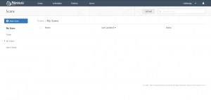 | 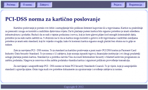 | 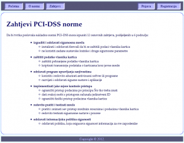 |
{kind=link}
{kind=link}
{kind=link}
Prijava i registracija
Kao što je već spomenuto potrebna je prijava da bi se koristio alat, a to se može pomoću stranice "Prijava".
U slučaju da korisnik nema račun, potrebna je registracija, a to se može postići pomoću stranice "Registracija". Pri registraciji se od korisnika traži željeno korisničko ime, ime i prezime korisnika, željena i potvrđena lozinka te naziv korisnikovog poduzeća.
| 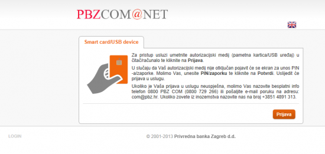 | 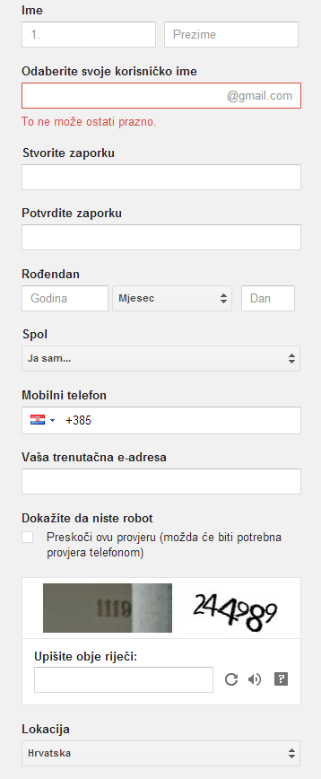 |
{kind=link}
{kind=link}
Provjera usklađenosti
Za potrebe prikazivanja funkcionalnosti ove aplikacije je kreiran testni korisnički račun (s korisničkim imenom "test" i lozinkom "test") s kojim smo se prijavili. Nakon prijave se vraćamo na početnu stranicu na kojoj se sad nalazi uputa za započinjanje provjere. Na stranici "Provjera" je objašnjen način na koji se vrši provjera usklađenosti.
Provjera se provodi na način da korisnik potvrđuje stavke iz pojedinih zahtjeva koje vrijede za njegovo poduzeće. Pjedini zahtjev je u potpunosti zadovoljen ako se sve stavke tog zahtjeva potvrde. Usporedno s time, ako barem jedna stavka nije potvrđena, ni zahtjev nije potvrđen. Ako su svi zahtjevi zadovoljeni, utvrđena je potpuna zadovoljenost s PCI-DSS normom.
Ako se odabere "Nova provjera" započinje se nova provjera usklađenosti čime se resetiraju rezultati prethodne provjere.
| 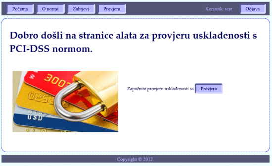 | 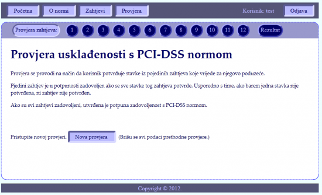 |
{kind=link}
{kind=link}
Ako pojedina stavka pojedning zahtjeva vrijedi za korisnika, on ju ptvrđuje sa "Da".
Kada je potvrdio sve stavke koje za njega vrijede, korisnik pomoću "Pošalji" sprema unesene podatke te odlazi na sljedeći zahtjev.
Pomoću sekundarnog izbornika može posjećivati pojedine zahtjeve proizvoljnim redoslijedom.
| 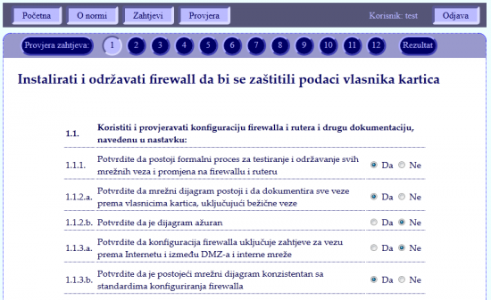 | 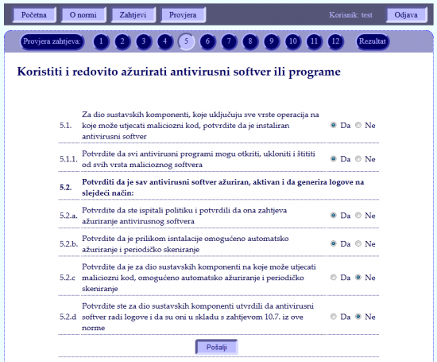 |
{kind=link}
{kind=link}
Rezultati provjere
Kada se prođu svi sahtjevi mogu ze vidjeti rezultati provjere. Korisnik može također u proizvoljnom trenutku pogledati rezultate. Svaki zahtjev kojem su sve stavke potvrđene je označen kao potvrđen sa zelnom kvačicom, a svaki zahtjev ima barem jednu nepotvrđenu stavku je oznečen kao nepotvrđen sa crvenim križićem.
Ako su svi zahtjevi potvrđeni pri dnu prikazana obavijest će sadržavati zelenu kvačicu, a ako barem jedan zahtjev nije potvrđen, obavijest će sadržavati crveni križić.
| 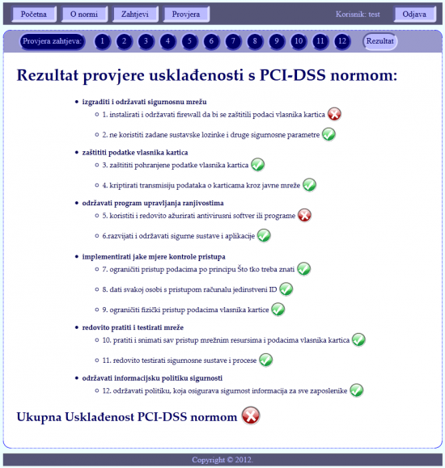 | 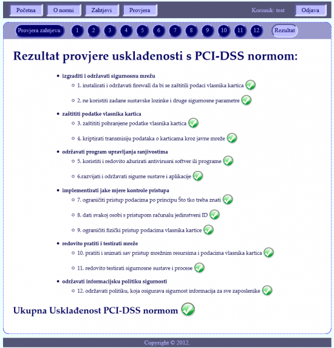 |
{kind=link}
{kind=link}
Aplikacija i kod
Ovdje možete naći te isprobati web aplikaciju za provjeru usklađenosti s PCI-DSS normom.
Ovdje možete naći sav programski kod aplikacije.
Obradio Zelruzak 12:01, 6. siječnja 2012. (CET)
Literatura
1. Debit/Credit Card Fraud (2011). Debit/Credit Card Fraud
5. PCI Security Standards Council (2008). Self - Assessment Questionnaire Version 1.2
6. Thakar, S., Ramos, T. (2011). PCI Compliance for Dummies.
Podjela poslova
Mario Barešić: vrste trgovaca, zahtjevi PCI - DSS norme od 7. do 12.
Jasna Kafka: uvod, izvori i oblici prijetnji, zahtjevi PCI - DSS norme od 1. do 6.
Željko Ružak: aplikacija za provjeru sukladnosti s PCI - DSS normom